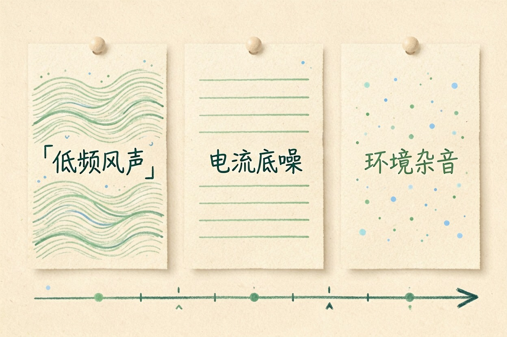
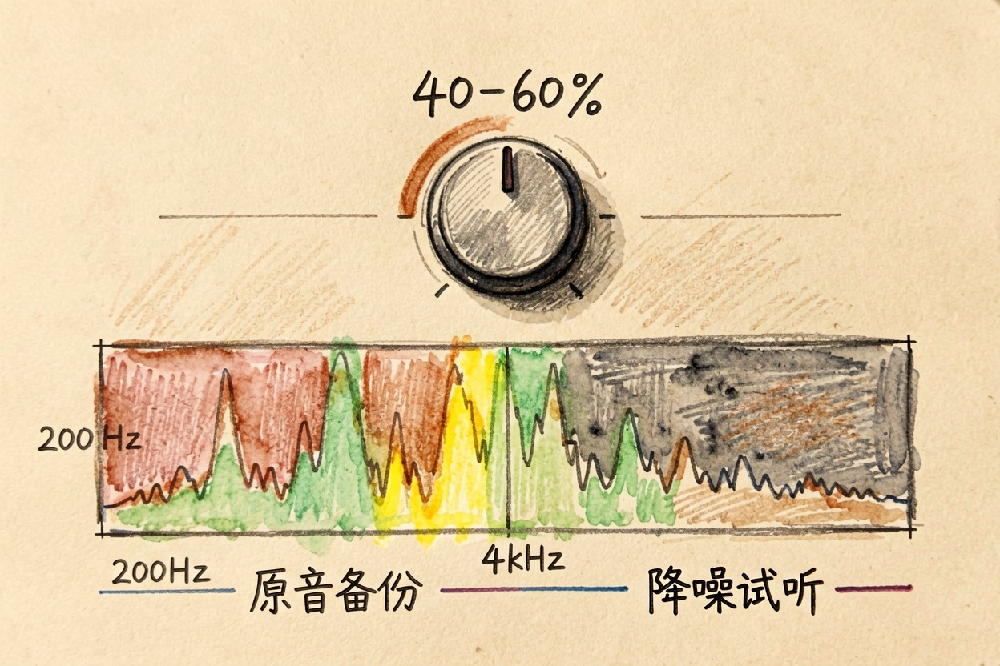
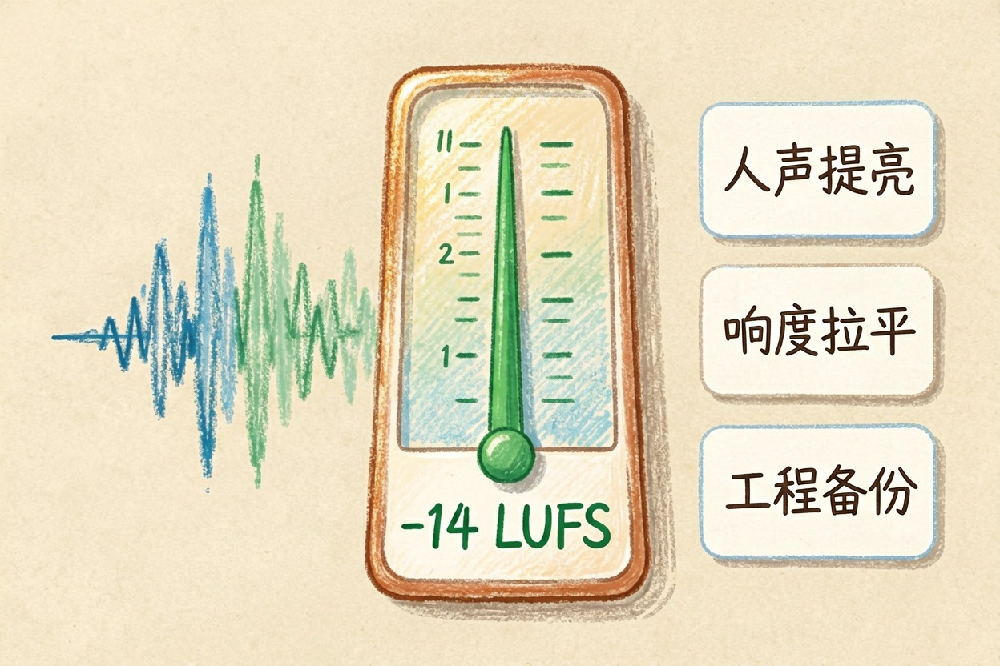
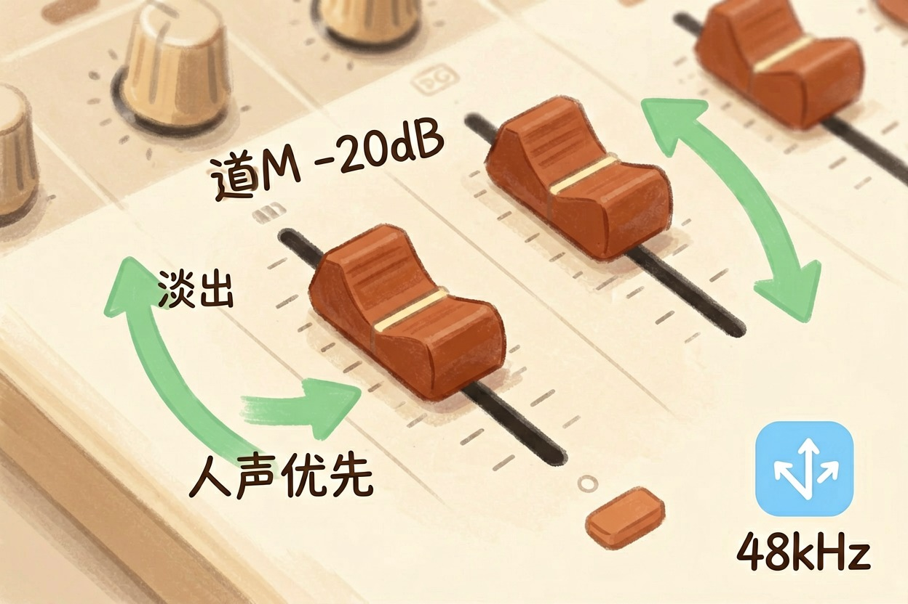
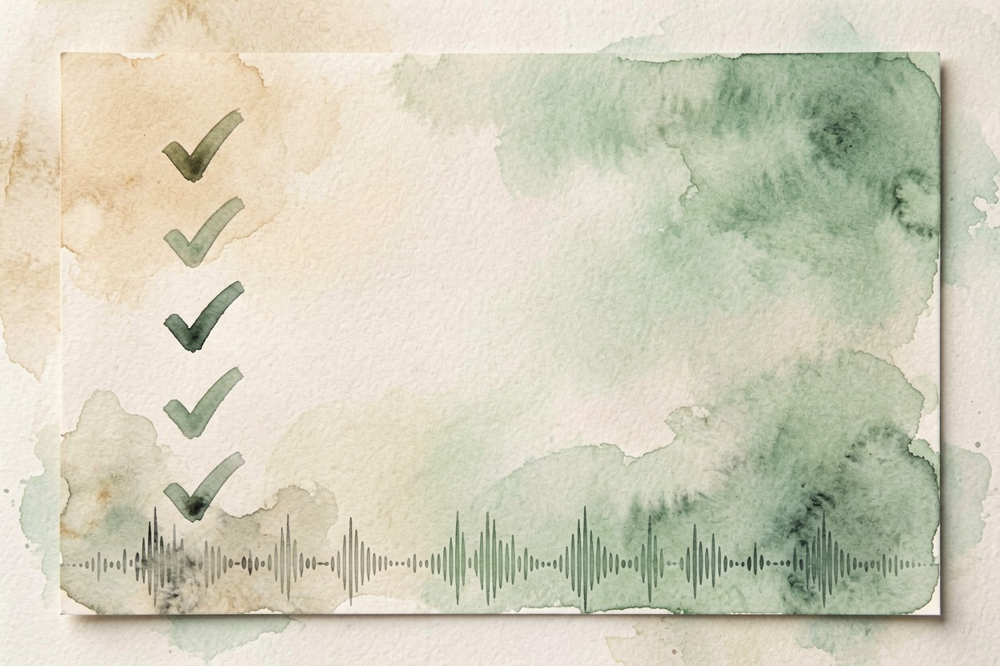

用 AI 处理视频声音？降噪与音量统一做法 — Learntide
视频声音发闷有杂音？先用工具把噪声压下去，再把人声提上来，听感立刻干净。
ai视频降噪适合处理哪些噪声

ai视频降噪，先认噪声类型。风声是低频呼呼，电流声是稳定嗡嗡，环境杂音是路人键盘。类型不同，处理方法不同，别一股脑全拉满。
先听一遍原片。标出噪声最重的时间段，后面单独处理。全片统一强度，干净处会被误伤，人声也发干。带耳机的音箱听，笔记本喇叭听不出细节。
噪声重灾区先记下来。户外风声多在开头，电流声常全程在。定位准，处理才省事。先修最脏的段，其余轻点就好。
录制的习惯最省钱。户外用防风毛，室内关空调。前期少噪，后期省力。降噪是补救，不是万能。
用剪辑软件一键降噪

多数剪辑软件带「降噪」开关。先开中档，试听再调。强度过高会吃掉人声细节，像蒙了层布。
处理前备份原音轨。降噪不可逆，调坏了能重来。同一段存两个强度版本，挑听得最自然的。先处理最脏的片段，干净片段轻点就好。
常见降噪参数：
1 降噪强度设 40% 到 60%
2 保留人声频段 200Hz 到 4kHz
3 风声单独用低频切除
4 导出前试听对比原片参数别照抄。房间混响重的片，保人声频段要窄一点。试听是唯一的裁判，耳朵比数字可靠。每段都过一遍，不偷懒。
批量片先定模板。参数存预设，十段片一套参数，效率翻倍。
人声增强与音量统一

噪声压下去，人声还发虚，就开「人声增强」。它把说话频段提亮，口播更清楚。别开太狠，齿音会刺耳。
各段音量要统一。开头小声、中间爆音，观众得一直调音量。用响度匹配把整片拉到同一水平，听感才稳。访谈切换机位，音量跳变最明显，重点校。
响度标准有参考值。多数平台建议负十四 LUFS 左右。导出前看一眼表，别凭感觉。达标了，手机外放也不炸。
备份成品再发。导出后原工程留着，改字幕不用重来。工程文件占地方，但省下次重来。
背景音乐别盖过人声

配乐是陪衬，不是主角。人声说话时，背景乐压到负二十分贝上下。留气口，别全程铺满。
淡入淡出让配乐不突兀。片头尾各做两秒渐变，转场更顺。配乐怎么挑，可以看同簇的 ai做背景音乐 思路。人声一进来，配乐就退，这个节奏最稳。
配乐音量也纳入响度管理。别让它拉高整片均值，否则人声被迫压低。整体平衡，才干净。先定人声，再塞配乐。
导出参数与避坑
导出选常见音频格式，码率够用就行。采样率四十四点一或四十八千赫，平台和播放器都认。
ai视频降噪最怕三件事：强度拉满、配乐压人声、响度不齐。每步都戴耳机试听，成品才干净。功能边界，以官网当前说明为准。
最后提醒：别指望一键降噪就完事，人声处一定要复听。把噪声认准，ai视频降噪才真管用。

本文信息核对于 2026-08-08。AI 产品的价格、免费额度与功能变动频繁，实际以各工具官网当前说明为准。